Screenshots
Use the scrollbar to view more images.
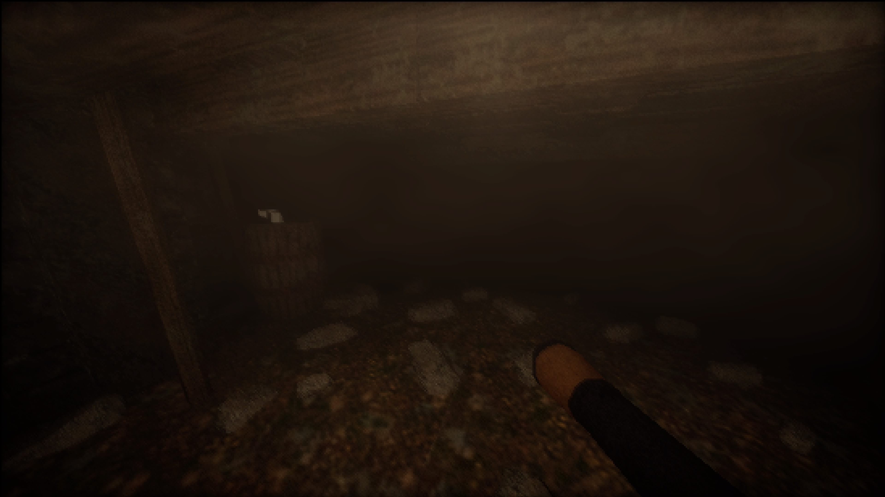
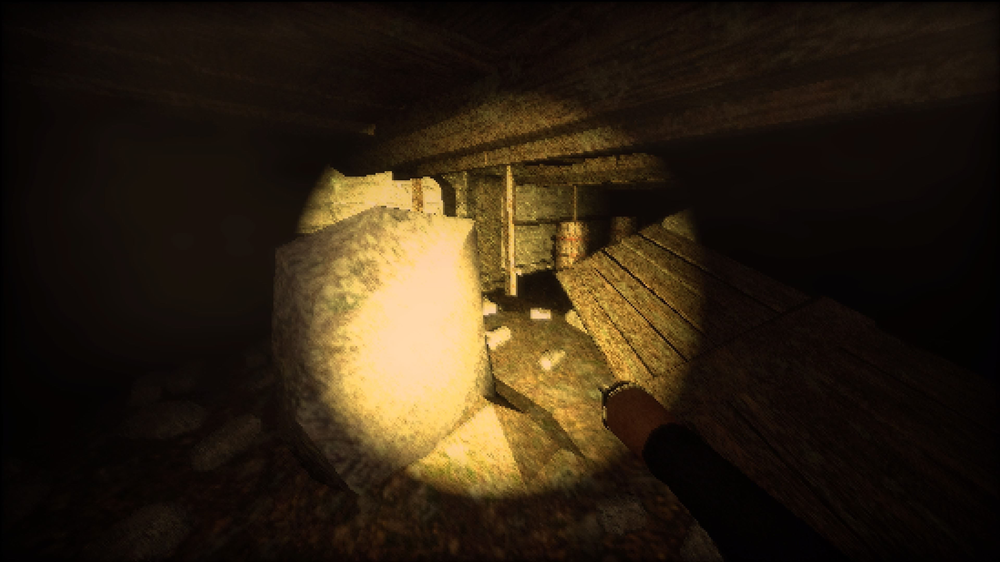
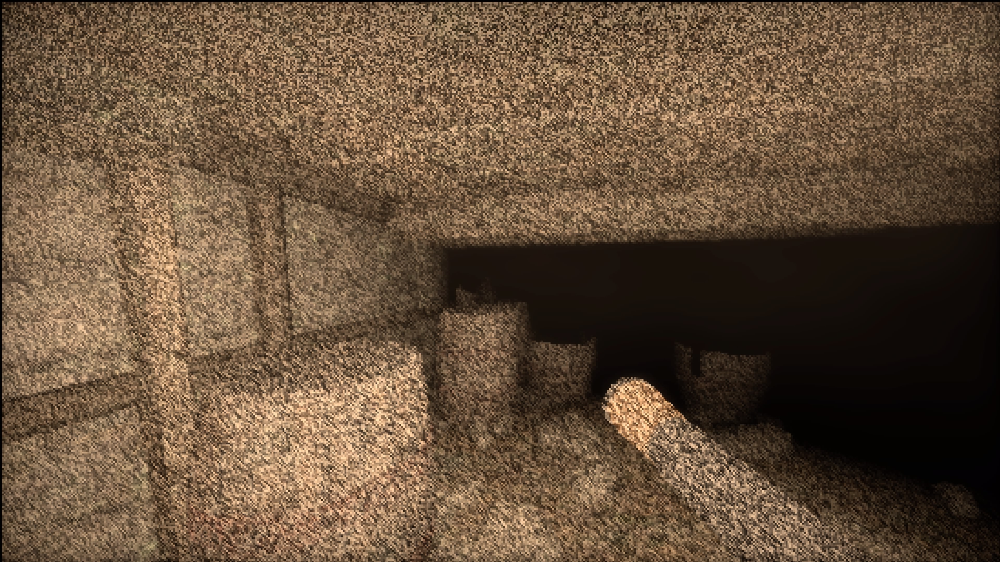
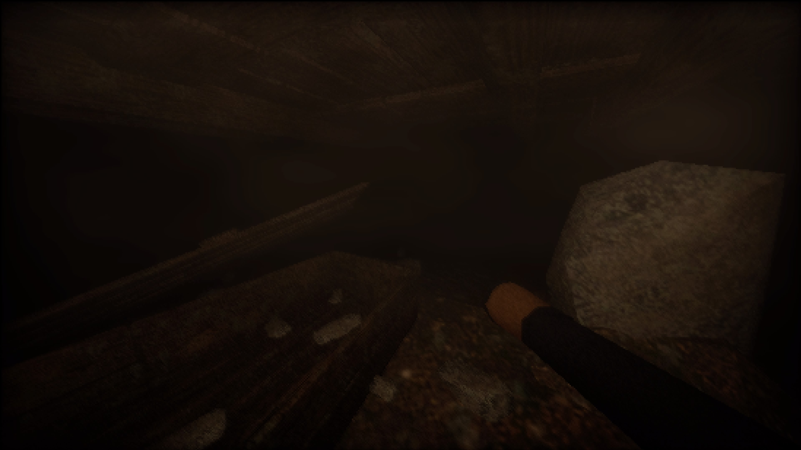
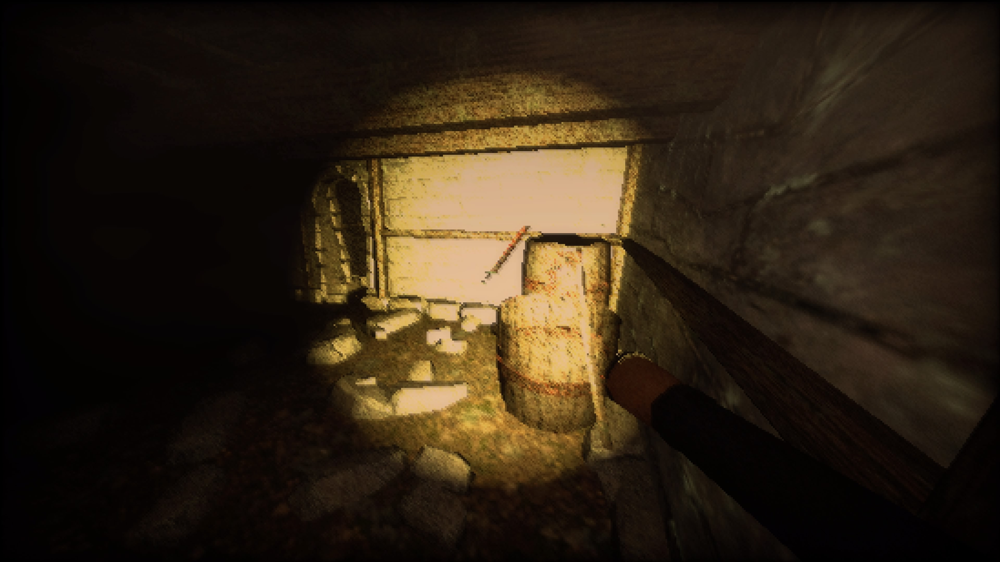
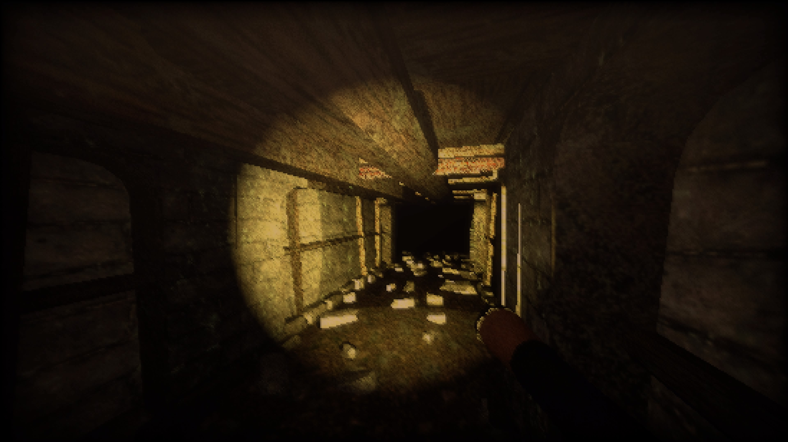
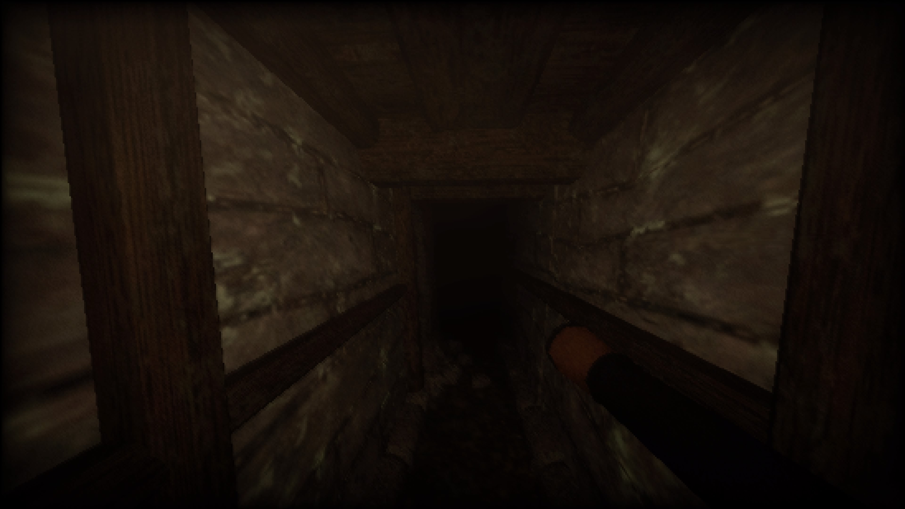
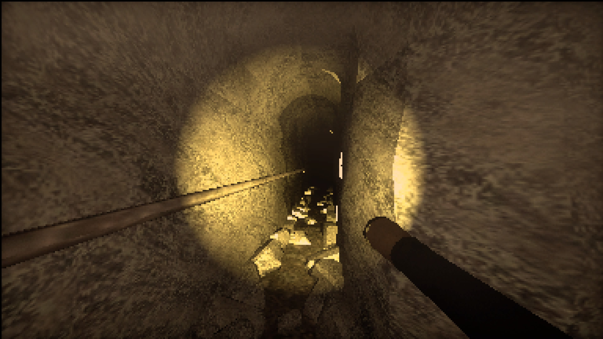
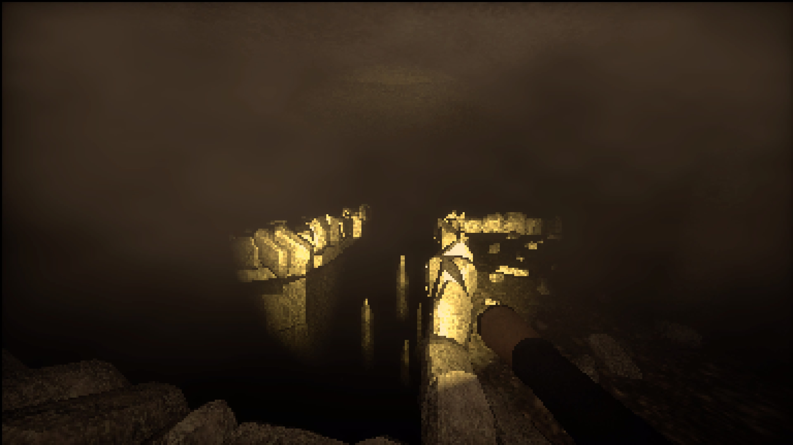
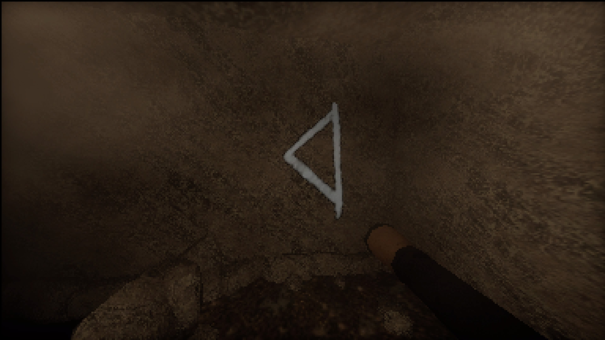
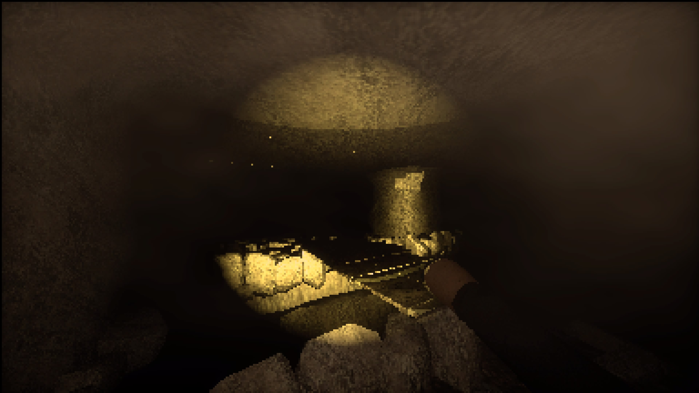
Tools - C++, PS5 Devkits, JSON
About
Entombed is an FPS horror game set in the depths of an ancient Draugr's tomb. The player takes the shoes of a skeptic treasure hunter, who isn't afraid of the 'ghost-stories' goes in search of valuable goods in old historical sites, however as the game progresses you soon realize, maybe those stories had more truth to them than expected.
The game thrives on player intraction as each one made with the world (whether opening a door or picking up items) increaeses the likelyhood of sanity events to play. Sanity events are a series of events that occur randomly throughout the playthrough ranging from over 10 visual effects that emulate a dwindiling sense of sanity and also gameplay events such as door slamming or spawning the draugr nearby.
Solve puzzles and maintain your flashlight battery while you trek through the dark depths of the Draugr's Tomb. and make sure to grab anything shiny!
My role
Entombed was created in the span of 6 months from scratch on the PS5DK,
Creating a custom engine suited for our needs we designed and implemented features/tools that were invaluable to the projects development such as
Serializable saving and loading of game and scene data as well as a Unity scene exporter for seamless level design creation/export to serialized format used by our engine.
Created by a small team of 5 Uni students (3 programmers, 1 designer & 1 artist), Enbtombed is a game based around the viking mythos of the Draugr.
Due to the size of the programming team being small, we each had fairly large implementations we were assigned, as the engine/design doc grew with requirements.
I was responsible for many of the gameplay, engine and graphical implementations for this project including:
Custom Collision Detection & Response System
To keep the player within bounds of the level, a collision resolver was needed to detect and react to player movement in relation to objects in the gameworld.
My implementation made use of custom bounding volumes ( In this case OBBs & AABBs), GJK distance detection & Expanding Polytope Algorithms for detecting & resolving collisions respectively.
Sound Engine
Due to using Sony's libraries for our engine, much of the functionality implemented had to be using their systems which required lots of technical understanding and plenty of research & testing on the limited documentation available.
Because of this a robust system was needed to suit our game as many of the horror aspects rely heavily on visual/audio queues.
The Audio Manager system implemented is a Singleton class that mananges a pool structure of audio sources allowing for dynamic allocation of voices and rendering/parsing of sound files from anywhere in code it was needed.
It takes into account the sound and player position to emulate 3D Audio further increaing immersion as well as supporting up to 64 simultaneous voice playbacks at any one time.
Imgui Debug Scene Inspector & Editor
For rudimentary level editing and debugging the dear ImGui library was used to implement an easy to use debug menu that allowed for lots under the hood editing of different gameplay variables.
As well as providing lots of visual information useful for debugging, it also allowed for
Objects to be spawned, manipulated, deleted, have component's like the hitbox edited and more. Sound effects & In-Game Events could be called on demand & Realtime editing of shader variables was accessible to adjust the look of the game on the fly.
JSON Serializer & Parser
Enbtombed was developed with a Data-Driven philosophy and due to the large quantity of assets used in the game, a suitable way to manage scenes, asset paths and many other data variables in the game was neccessary
Making use of the rapidJson library to serialize data and read from json files for large sets of data. This was used for many things from scene loading, hitbox bounds, Model, Texture & Sound filepaths and info.
PSX/PS1 Shader Effects
Fitting in with Entombed's unique aesthetic, we really wanted to bring out that retro horror feel with extra character, We achieved this by using low-poly and simplistic assets focusing heavily on post-processing and shader effects to create the visual style
A large player in the visuals of Entombed is the Vertex warping & Affine texture mapping akin to the PlayStation 1's similar visual artefacts found in many titles. which are emulated in the forward render pass to achieve that Silent-Hill Vibe.